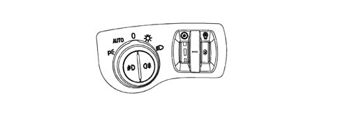

Composition
- Path
- Descriptions > 55 ELECTRICAL EQUIPMENT > 5560 ON-BOARD INSTRUMENTS > 5560B ANALOGUE INSTRUMENT PANEL > Composition
- Kind
- system description
- Applies to
- all engines; all production periods
- Interactive page
- https://sloeber94.github.io/elrnDB-lThss/en/#/210429
Applies to: all engines; all production periods
The N.Q.S. consists of:
- Instrument panel for the engine type and version located in front of the driver and equipped with a B-CAN interface
- Button for zeroing trip meter and cancelling messages, located at the front of the panel on the right hand side
- Lighting dimmer control, located on the left panel, driver's side
- Front lights sensitivity dimmer control, located in the left panel, driver's side
